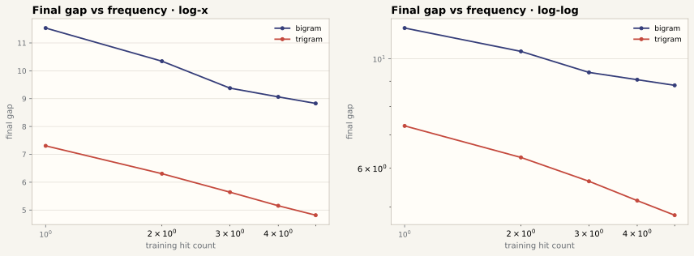

n-gram Gap · 干净报告（新标准 v2）
本报告只使用新标准波次 *_v2_fixed run：表优化器 β₂=0.99（无动量）、表学习率 ×2、bf16 + torch.compile。未跑完的 run 用已有部分数据作图并显式标注。所有曲线图采用双对数坐标；参数轴为 shard dose（1× = 标准训练集 ≈50M unique tokens）。
数据范围：仅 v2 波次（已从三机同步到
data/runs_fixed/*_v2_fixed/）。旧标准 *_fixed 数据不再出现在本报告。gap 定义固定为 val_loss − train_loss（同一 step、同一 fixed-val batch）。双对数图中 gap ≤ 0 的点无法取对数，按绘图规范剔除并在图注说明。1. 注入点消融（M2 · v2 · 2000 步 · seed 42）
同一个 n-gram table 放在不同位置，gap 强度不同；无 n-gram 负对照 gap 接近 0。双对数坐标下可见各注入点 gap 的增长斜率差异。

图 1 · 注入点 gap 曲线簇（log–log）：v / y / input 三条 gap 曲线在双对数下近似幂律增长，nogram 对照贴底（仅 gap > 0.02 的段可见）。新标准下 input 主线 gap @2000 = 5.21（旧标准 1.87），整体 gap 水平抬升。
input 注入（主线）
5.21
gap @ 2000 steps (v2)
y 注入
5.87
gap @ 2000 steps (v2)
v 注入
6.13
gap @ 2000 steps (v2)
无 n-gram
0.25
negative control (v2)
2. Shard dose 扫描（M5 · v2 · 2000 步）
shard dose = 训练集大小相对标准 1× 训练集（≈50M unique tokens）的比例。曲线横轴为训练 step（1 step = 147,456 tokens），dose 是曲线参数。双对数坐标下，小 dose 的过拟合/泛化分叉与大 dose 的平坦区被同时展开。

图 2 · 曲线簇（log–log）：左 train loss、中 val loss、右 gap，每个颜色 = 一个 dose（图例给出实际 unique token 数）。同色竖直虚线 = 该 dose 完成一遍训练集的 epoch 边界。0.25× 在双对数下 train loss 直线下降（幂律过拟合）、val loss 与 gap 直线上升；≥2× 各线贴底平坦。8× 为 1870 步部分数据。

图 3 · Meta 关系（log–log）：固定 step=500/1000/2000 采样，train/val/gap 对 shard dose 的依赖。gap 面板拟合幂律
gap ∝ dose^α：α(500)=−2.12、α(1000)=−2.29、α(2000)=−1.76 —— 三个采样点斜率一致（≈−2），说明 gap 对 dose 的响应在新标准下是稳定幂律。非正 gap 在 log 轴上剔除。
图 4 · 固定 step 2000 的 dose–response：左 log-x 全景（含负 gap），右双对数（symlog 保留近零区）+ 正 gap 幂律拟合。◇ = 部分 run（8×, 1870 步）。gap 从 0.25× 的 16.3 单调下降到 ≥4× 的 ≈0：新标准不改变 dose 响应方向，只抬升整体水平并加陡斜率。

图 5 · Bigram 分 bin（v2 · skill 规范双轴图）：左轴 = token fraction 分组柱（train
#2d6f9f / val #c4493d，含 novel）；右轴 = 各 bin 平均 loss（train 虚线 / val 实线）+ 最终 per-bin gap（#353d79 点线，novel 处断开，因为 train 无 token）。低频 bin 的 val−train gap 最大：gap 集中在低频区。
图 6 · Trigram 分 bin（v2）：同图 5 结构。trigram context 更稀疏，novel/低频 bin 占比更高，per-bin gap 绝对值更大、随频率衰减更陡。

图 7 · Gap vs frequency（log-x + log-log 双面板）：最终 per-bin gap 对 context 频率（几何中点）。log-log 下近似幂律 gap ∝ f^α（α<0）——「gap 是低频现象」在 v2 新标准下依然成立。非正 gap 已剔除（图内注明）。
| run_id (v2) | dose | steps | gap @2000 | train loss | val loss | 状态 |
|---|---|---|---|---|---|---|
| nglab0_25x_input_v2_fixed | 0.25x | 2000 | 16.298 | 0.049 | 16.348 | 完成 |
| nglab0_5x_input_v2_fixed | 0.5x | 2000 | 5.170 | 2.035 | 7.204 | 完成 |
| nglab0_75x_input_v2_fixed | 0.75x | 2000 | 3.343 | 2.348 | 5.690 | 完成 |
| nglab1x_input_v2_fixed | 1x | 2000 | 5.208 | 1.606 | 6.814 | 完成 |
| nglab1_5x_input_v2_fixed | 1.5x | 2000 | 2.369 | 2.347 | 4.716 | 完成 |
| nglab2x_input_v2_fixed | 2x | 2000 | 1.249 | 2.664 | 3.913 | 完成 |
| nglab2_5x_input_v2_fixed | 2.5x | 2000 | 0.756 | 2.777 | 3.533 | 完成 |
| nglab3x_input_v2_fixed | 3x | 2000 | 0.501 | 2.892 | 3.393 | 完成 |
| nglab4x_input_v2_fixed | 4x | 2000 | 0.132 | 3.175 | 3.307 | 完成 |
| nglab5x_input_v2_fixed | 5x | 2000 | 0.043 | 3.188 | 3.231 | 完成 |
| nglab6x_input_v2_fixed | 6x | 2000 | -0.098 | 3.547 | 3.448 | 完成 |
| nglab8x_input_v2_fixed | 8x | 1870 | -0.040 | 3.208 | 3.168 | 进行中 |
3. Epoch 对齐批（M6 · v2 进行中）
固定 5 epoch 的 v2 重刷刚开始三个小剂量，已完成点如下；其余剂量排队中。
| run_id (v2) | dose | steps (=5 epochs) | final gap | 状态 |
|---|---|---|---|---|
| nglab0_25x_e6_v2_fixed | 0.25x | 420 | 1.852 | 完成 |
| nglab0_5x_e6_v2_fixed | 0.5x | 840 | 1.851 | 完成 |
| nglab0_75x_e6_v2_fixed | 0.75x | 880 | 1.557 | 进行中 |
4. 口径说明
- 新标准 v2：表优化器 RMSProp 无动量
β=(0.0, 0.99)、table_lr_scale=2.0、bf16 + torch.compile；backbone AdamW、lr 0.004 不变。 - gap 定义：val_loss − train_loss，同一 step、同一 fixed-val batch；novel context 无 train loss，不进 gap。
- 双对数规范：gap ≤ 0 的点在 log 轴上剔除（图注说明）；dose–response 右面板用 symlog 保留近零与负值区域。
- 部分数据：8× 快照时 1870 步，以 ◇ 与图注显式标注；其余 11 个 dose 均为完整 2000 步。
- 生成脚本：
docs/plot_scripts/gen_sweep_v2_figs.py；canonical SVG 在docs/figs/epoch_scale/fig_sweep_v2_*.svg。